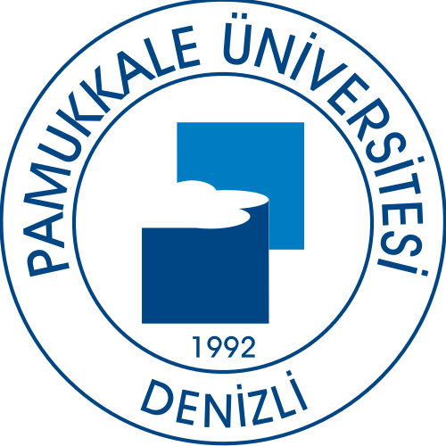
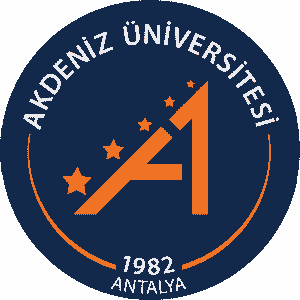
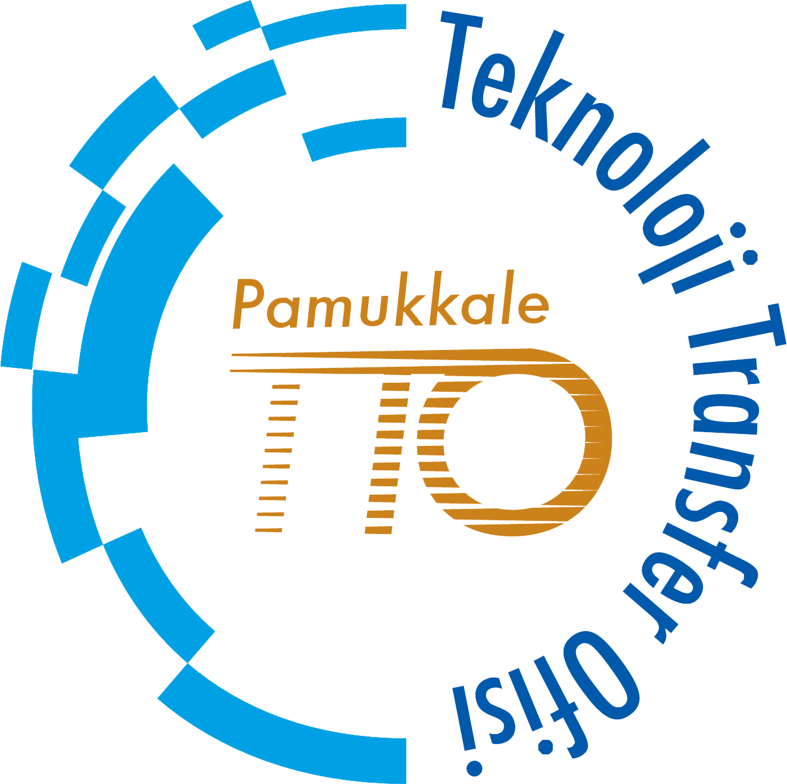

Öğrenim Bilgisi
-

2023 — 2026Pamukkale Üniversitesi
Sosyal Bilimler Enstitüsü · Yönetim Bilişim Sistemleri (YL, Tezli)
-

2022 — 2023Akdeniz Üniversitesi
Sosyal Bilimler Enstitüsü · Yönetim Bilişim Sistemleri (YL, Tezli)
-
2020 — 2024
Akdeniz Üniversitesi
Uygulamalı Bilimler Fakültesi · Yönetim Bilişim Sistemleri (Lisans)
-
2016 — 2020
Akdeniz Üniversitesi
Edebiyat Fakültesi · İngiliz Dili ve Edebiyatı (Lisans)
Deneyim
Akademik Görevler
-
Nisan 2023 — Devam Ediyor↗
Araştırma Görevlisi
Pamukkale Üniversitesi · İktisadi ve İdari Bilimler Fakültesi
Yönetim Bilişim Sistemleri BölümüPamukkale, Denizli, Türkiye
İdari Görevler
-

Eylül 2025 — Devam Ediyor↗Yönetim Kurulu Üyesi
Pamukkale Teknokent Teknoloji Transfer Ofisi A.Ş.
Pamukkale, Denizli, Türkiye
Akademik Yayınlar
Makaleler
-
2025
SCI-Expanded · Özgün Makale · Uluslararası Hakemli↗
Interpretable building energy performance prediction using XGBoost Quantile Regression
Energy and Buildings, 2025
-
2024
SCI-Expanded · Özgün Makale · Uluslararası Hakemli↗
Modeling building carbon emissions by using MARS algorithm: A case of Istanbul
Building and Environment, 2024
Bildiriler
-
2025
Uluslararası · Tam Metin Bildiri
Leveraging LLM-Based Multi-Agent Systems for Automated Literature Analysis: An Application on Research Trend and Gap Discovery
17th UMTEB International Scientific Research Congress, 2025
-
2025
Uluslararası · Tam Metin Bildiri
Evaluating Factors Affecting Housing Prices Using Machine Learning Models: The Case of Denizli
9th International Halich Congress on Multidisciplinary Scientific Research, 2025
-
2025
Uluslararası · Özet Bildiri
Effectiveness of Large Language Models in Detecting Computer-Generated Fake Product Reviews
11th International Aegean Congress on Innovation Technologies & Engineering, 2025
-
2025
Uluslararası · Özet Bildiri
Comparative Sentiment Analysis of Vegan Restaurant Customer Reviews with VADER and RoBERTa Algorithms
11th International Aegean Congress on Innovation Technologies & Engineering, 2025
-
2025
Uluslararası · Özet Bildiri
Development of a Building Energy Performance Model Using Machine Learning Algorithms
14th International Atlas Congress on Advanced Scientific Studies and Interdisciplinary Research, 2025
-
2025
Uluslararası · Özet Bildiri
Cluster Analysis and Mapping of Apartment Buildings in Istanbul Based on Physical Characteristics
22nd International Symposium on Econometrics, Operations Research and Statistics, 2025
-
2023
Uluslararası · Özet Bildiri
İstanbul'da Bina Sera Gazı Emisyonlarını Etkileyen Faktörlerin MARS Yöntemi ile İncelenmesi
10th International Conference on Applied Economics and Finance, 2023
Projeler
Devam Eden
-
 TÜBİTAK 2209-A · 2025 / 1. Dönem
TÜBİTAK 2209-A · 2025 / 1. DönemBERTopic ve Büyük Dil Modelleri ile Türkçe Tiyatro Oyunu Yorumlarının Çok Boyutlu Analizi
Görev: Akademik Danışman
-
TÜBİTAK 2209-A · 2025 / 1. Dönem
Büyük Dil Modelleri ve İnsan Yazımı Türkçe Akademik Özetlerin Bilimsel Yazım Standartları Açısından Karşılaştırmalı Analizi ve Türkçeye Uyumlu Bir Değerlendirme Çerçevesi Geliştirilmesi
Görev: Akademik Danışman
-
TÜBİTAK 2209-A · 2025 / 1. Dönem
E-Ticaret Ürün Fotoğrafçılığında Görsel Kalitenin Referanssız Metrikler ile Nesnel Ölçümü
Görev: Akademik Danışman
-
TÜBİTAK 2209-A · 2025 / 1. Dönem
Kentsel Toplu Taşımada Erişilebilirlik ve Erişim Temelli Kentsel Konforun Açık Veri Tabanlı Ağ Analiziyle Modellenmesi: Denizli Örneği
Görev: Akademik Danışman
-
TÜBİTAK 2209-A · 2025 / 1. Dönem
KOBİ'lerin Dijital Dönüşümünde KAHVEM: Kahve Dükkanı İşletmeleri İçin Ölçeklenebilir Mobil Yönetim Bilişim Sistemi Modeli
Görev: Akademik Danışman
Paylaşılan Dosyalar
-
↗
Özgeçmiş (CV)
Güncel akademik özgeçmiş
İletişim
Akademik iş birlikleri, ortak yayınlar ve projeler için bana ulaşabilirsiniz.
bdal@pau.edu.tr